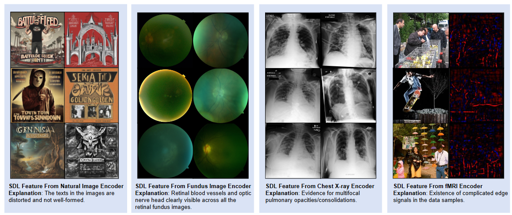
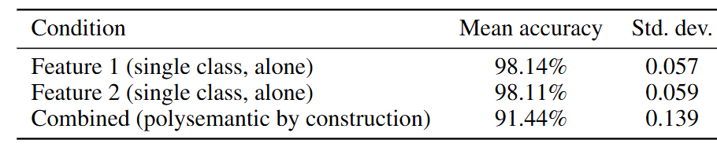
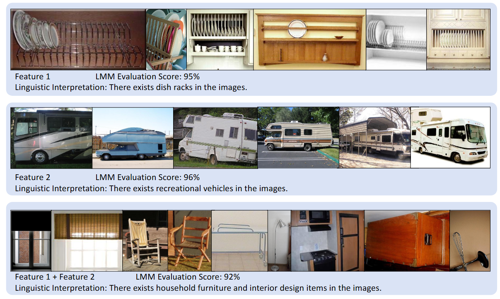
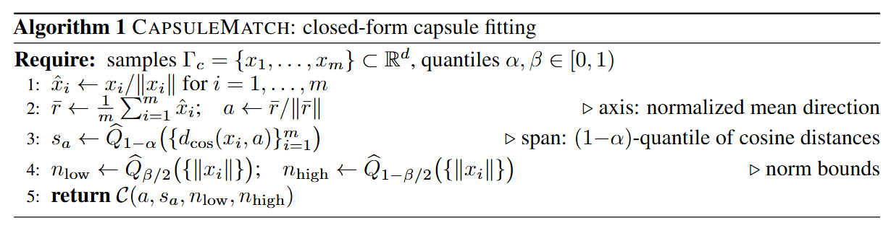
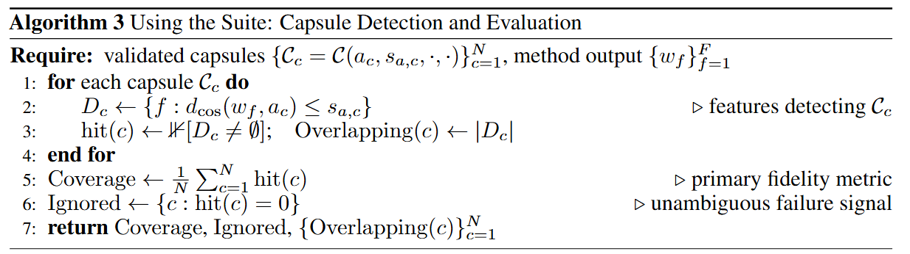

Paper Walkthroughs
Concept-Based Mechanistic Interpretability Needs a Concrete Evaluation Paradigm
Before scaling concept-based mechanistic interpretability any further, the field needs to agree on how to tell whether a method actually recovers the concepts a model encodes.
Background and Motivation
Understanding which concepts are encoded in the internal representations of large language models and vision-language models is one of the central goals of mechanistic interpretability. Over the past few years, Sparse Dictionary Learning (SDL), which covers sparse autoencoders, transcoders, crosscoders and their many variants, has become the dominant methodology for this goal. It has been scaled to frontier models and applied to circuit analysis, steering, unlearning and medical imaging.
Around SDL, a sizable evaluation suite has grown up: reconstruction loss and sparsity, automated interpretability scoring, human evaluation, feature absorption rates, sparse probing, and model editing benchmarks. Each of these is useful. The question this paper asks is a more basic one: do any of them measure what SDL is actually supposed to achieve?
The central goal of SDL is to recover the ground-truth features underlying the observed representations. Our position is that none of the standard metrics measures this directly, that the gap is structural rather than incidental, and that the community should converge on a concrete evaluation paradigm before continuing to scale methods whose effectiveness has not been fully verified. This matters more than usual here, because the stated motivation of the whole program is AI safety, where undetected failure is the most costly.
How Are SDL Methods Evaluated Today?
The existing evaluations are fragmented but can be sorted by what each one fundamentally measures:
- Reconstruction & Sparsity: how well activations are rebuilt (loss, L0, loss recovered).
- Human & LMM Evaluation: whether top-activating examples form a coherent, describable concept.
- Sparse Probing: whether a few latents suffice to predict concept labels.
- Feature Absorption Rate: whether a broad feature swallows its sub-concepts.
- Downstream Tasks: whether features support steering, unlearning, or disentanglement.
- Ground-Truth Recovery: whether learned features match known true features.
- Unified Benchmark Suites: bundles of the above (SAEBench, MIB, CE-Bench).
Limitations of Existing Evaluation Methods
If the aim is to measure whether SDL recovers the model's ground-truth features, every one of these families has a core limitation:
- Reconstruction & Sparsity: zero loss is achievable by infinitely many solutions that recover no ground-truth feature.
- Human & LMM Evaluation: polysemantic features can score high, while faithfully recovered but hard-to-describe features are undercounted.
- Sparse Probing: it measures utility rather than fidelity, and only tests features tied to a pre-specified concept vocabulary.
- Feature Absorption Rate: it covers one failure mode and only gives a lower bound on recovery failures.
- Downstream Tasks: polysemantic features can still steer well, so utility is conflated with fidelity.
- Ground-Truth Recovery: it is the only direct measure, but it is currently feasible only in synthetic settings.
- Unified Benchmark Suites: aggregating insufficient proxies does not yield a sufficient evaluation.
The rest of the paper backs this up with theory and with experiments.
Theoretical Evidence
Setup: SDL and Its Central Goal
Under the Linear Representation Hypothesis, a model's internal representations are generated by \(n\) sparse, non-negative ground-truth features \(x(s) \in \mathbb{R}^n_+\) for each input \(s\), each encoding an interpretable concept. We only ever observe two linear projections of \(x(s)\): the probe-space representation \(x_p(s)\) that the SDL encoder reads, and the reconstruction-space representation \(x_r(s)\) that the decoder rebuilds:
An SDL method trains an encoder-decoder pair \((W_E, W_D)\) with \(n_q\) latents and a sparsity-inducing activation \(\sigma\) to minimize
The common SDL methods differ only in the choice of \((x_p, x_r)\). Sparse autoencoders set \(x_p = x_r\). Transcoders let \(x_p\) and \(x_r\) be activations of successive layers, so the model learns a sparse approximation of the layer-to-layer transformation. Crosscoders encode and reconstruct jointly across multiple layers or models.
The key observation is that the loss and the goal live in different places. The loss is computed on observed quantities, while recovery is a property of the latent \(x(s)\) (and of \(W_p\), \(W_r\)), which is inaccessible in naturalistic settings. That gap is the root of the evaluation problem.
Zero Loss Does Not Imply Feature Recovery
Under the high-sparsity limit, the objective approximates a per-feature loss over the ground-truth directions:
Theorem 5.1 (Underdetermined Solution Space). Under the Linear Representation Hypothesis, \(\tilde{\mathcal{L}}_{\text{SDL}} = O((1-S)^2)\) if and only if \(w_r^d = W_D\, \sigma(W_E\, w_p^d)\) for all \(d \in [n]\). When \(n_q > n\), this system is underdetermined and admits infinitely many solutions.
Some of those solutions achieve zero loss while recovering no ground-truth feature direction at all. A near-zero-loss solution that does recover the ground truth exists, but it is one among infinitely many. Reconstruction loss therefore cannot separate recovery from failure. Related work points the same way: even the optimal SAE under realistic sparsity distorts features through shrinking and vanishing, and SAEs trained on the same model and data with different random seeds recover largely different feature sets.
Polysemantic Solutions Are Structurally Pervasive
Theorem 5.2 (Prevalence of Spurious Partial Minima). Under the Linear Representation Hypothesis with \(n \geq 2\) and \(n_q \geq n\), for any activation pattern that is realizable, polysemantic, and forms a partition of \([n]\), there is a spurious partial minimum of \(\tilde{\mathcal{L}}_{\text{SDL}}\) exhibiting this pattern.
Hierarchical concept structure, which is present in virtually all real-world representations, guarantees that such minima exist through a provable feature absorption mechanism:
Theorem 5.3 (Feature Absorption from Hierarchical Structure). If the ground-truth features contain a parent concept decomposing into sub-concepts \(\{d_{i,1}, \ldots, d_{i,k_i}\}\) with \(k_i \geq 2\), and the corresponding activation pattern \(\mathcal{P} = (\mathcal{F}_1, \ldots, \mathcal{F}_{i^*}, \ldots, \mathcal{F}_N)\) is realizable, then there exists a sub-concept \(d_{i^*,j^*}\) such that the absorption pattern \(\mathcal{P}' = (\ldots, \mathcal{F}_{i^*} \setminus \{d_{i^*,j^*}\}, \{d_{i^*,j^*}\}, \ldots)\) is realizable and corresponds to a spurious partial minimum.
Taken together, polysemantic solutions are structural properties of the SDL landscape rather than incidental training failures. They are also compounded by an evaluation blind spot: polysemantic features that fire on semantically coherent sub-concept clusters can receive high interpretability scores, which makes them hard to tell apart from genuine monosemantic recovery without ground-truth access. This matches what has been reported in practice, including feature absorption in trained SAEs and SAE latents that decompose into combinations of finer-grained concepts.
Empirical Evidence You May Ignore about SDL
1. SDL Can Achieve Zero Loss, Yet Still Give Misaligned Features
We construct a fully synthetic benchmark that satisfies the Linear Representation Hypothesis exactly, with all feature directions known. The ground-truth features form a clean orthogonal basis, and the training loss converges to near zero as usual. Yet the learned encoder and decoder directions are substantially misaligned with the ground-truth features. More broadly, across SDL methods spanning 0% to 89% GT Recovery, reconstruction metrics make them look indistinguishable. This is Theorem 5.1 in action: low reconstruction loss is compatible with complete recovery failure.
2. Some Multimodal Features Are Intrinsically Hard to Describe
Automated interpretability scoring asks whether a natural-language label predicts a feature's held-out activations. That criterion conflates linguistic expressibility with representational fidelity. We trained SDL modules on natural images, fundus images, chest X-rays and fMRI representations, and asked an LMM to describe the highest-activating samples of each feature.

Figure 1. Cross-modal SDL features that resist natural language grounding. The features encode coherent structure across all four modalities, yet the descriptions range from domain-specific (“retinal blood vessels and optic nerve head”) to vague (“complicated edge signals”).
The features clearly capture reproducible structure: retinal vasculature, pulmonary consolidation patterns, complex edge signals. But accurate grounding in language is difficult. Descriptions either need narrow clinical vocabulary that general pipelines do not have, or collapse into vague phrases. An evaluation that relies mainly on linguistic coherence will systematically undercount faithfully recovered features of this kind. In these cases the limit lies in language, and the recovery itself is fine.
3. Polysemantic Features Can Still Highly Match with Natural Language
The opposite failure mode is a polysemantic feature that gets rated as interpretable. To test this in a controlled way, we use ImageNet-1K class-mean embeddings as ground-truth feature proxies. Individually, Feature 1 (dish racks) and Feature 2 (recreational vehicles) get precise labels and scores of 95% and 96%. We then sum the two embeddings and raise the activation threshold, which gives a feature that is polysemantic by construction.

Figure 2. Polysemantic features receive high automated interpretability scores. The combined feature still scores 92%, because the LMM retreats to the coarse superordinate label “household furniture and interior design items”.
Instead of flagging a conflict, the LMM falls back to a label that is technically defensible but loses the specificity of both concepts. The consequence is a coverage blind spot: a run that absorbs ground-truth concepts into spurious polysemantic combinations can still report high interpretability scores, with no signal about what is missing. Ground-truth recovery metrics measure coverage, while automated scoring does not.
To check this is systematic, we repeat the procedure over 1,000 randomly sampled ImageNet-1K class pairs:

Table 1. Automated interpretability scores remain high under polysemanticity. Single features score 98.1% on average, and combinations that are polysemantic by construction still average 91.4%.
Most combinations still score at or near ceiling, and the mean is pulled down by a smaller set of harder cases rather than by a uniform drop. So the blind spot is a general property of this kind of scoring, and the dish-rack example is representative of it.
Toward a Concrete Evaluation Paradigm
These results converge on one conclusion: the field needs an evaluation paradigm anchored in ground-truth feature recovery, and eventually one that reaches frontier models. We propose that a benchmark for concept-based mechanistic interpretability should specify, for each concept, the region of representation space it occupies, and satisfy four principles:
- Ground-Truth Accessibility: known representational structure, obtained through a tiered approach: synthetic benchmarks with exact ground truth, concept approximation as a bridge, and human-annotated evaluation in naturalistic settings as a fidelity proxy.
- Falsifiability: the evaluation must be able to report failure, not only degrees of success. A GT Recovery of 0% is an unambiguous failure signal, whereas a reconstruction loss is not.
- Coverage Beyond Linear Features: the benchmark should include features with known non-linear or multi-dimensional geometry (periodic concepts such as days and months, for example), and extend to vision and multimodal representations.
- Separating Utility from Fidelity: whether features support a downstream task and whether they reflect the model's representational structure are distinct properties, and protocols should report them separately.
The type of benchmark we have in mind is simple to state: a set of carefully curated concepts, a model representation in which they are encoded, and, for each concept, the region of that representation space it occupies. The region is known exactly in synthetic settings and approximated in naturalistic ones. Any concept-based method, SDL or otherwise, can then be tested by checking whether the region it identifies matches the known region, regardless of the geometric form the method assumes. For SDL that region is a direction, and for geometric approaches it may be a subspace or a manifold. GT Recovery is the special case where regions are one-dimensional.
A Proposal: Capsule-Based Concept Localization
To show that this kind of benchmark can be set up in a naturalistic setting, the appendix sketches a concrete evaluation suite built on capsules, following our companion work on capsule lenses. The suite is built independently of the method under test, and it uses concept labels that no evaluated method gets to see.
Concept Geometry and Capsules
A concept \(c\) is a binary indicator on a dataset, and a model \(\phi_\theta\) induces its geometry \(\Gamma_c = \phi_\theta(D_c) \subset \mathbb{R}^d\), the representations of its positive examples. We approximate this geometry with a deliberately simple parametric shape, an angular cone about an axis intersected with a norm shell. With \(d_{\cos}(x, a) = 1 - \langle x, a\rangle / \|x\|\), the capsule is
Its parameters can be read off directly: the axis \(a\) gives the direction of the region, the span \(s_a\) its angular spread, and the norm bounds its magnitude range. Other shapes can replace capsules within the same protocol.
Building the Suite
Capsule matching fits a capsule to each concept in closed form. The axis is the normalized mean direction of the unit-normalized samples, the span is a quantile of the cosine distances to that axis, and the norm bounds are quantiles of the sample norms.

Figure 3. CapsuleMatch: closed-form capsule fitting from a concept's representations.
Validation then certifies each capsule per concept. We split the concept's positive set into a fitting set and a validation set, fit the capsule on the former, and measure two quantities: precision \(P_c\), the fraction of representations inside the capsule that truly belong to the concept (computed over the full dataset), and recall \(R_c^{\text{cov}}\), the fraction of held-out positives the capsule contains. A capsule enters the benchmark only if \(P_c \geq \tau_P\) and \(R_c^{\text{cov}} \geq \tau_R\). A passing capsule approximates the concept's location with known, reported error, and concepts that the capsule form summarizes poorly simply do not enter the benchmark.
Using the Suite
An SDL feature with decoder direction \(w_f\) detects a capsule \(\mathcal{C}_c\) if \(d_{\cos}(w_f, a_c) \leq s_{a,c}\), that is, if the feature's direction falls inside the concept's certified angular region. The threshold is set by the capsule itself and is not a tunable hyperparameter. For methods that propose a subspace or a manifold, a possible detection rule is region overlap with the capsule above a stated threshold.

Figure 4. Scoring a method's full output against the validated capsule set.
This yields three fidelity metrics:
- Coverage: the fraction of capsules detected by at least one output. This is the primary fidelity metric.
- Ignored: the concepts that no output detects. An ignored capsule with certified precision and recall is a per-concept recovery failure that is invisible to reconstruction loss, interpretability scoring and downstream tasks.
- Overlapping: the number of outputs falling inside each capsule, which diagnoses redundancy in how a method covers a single concept.
The suite poses a question that no existing family can answer: are there concepts that are demonstrably encoded in the representation, and that the method ignores entirely?
Alternative Views
The paper also discusses the objections we consider most serious. Human and LMM evaluation fills the gap: linguistic coherence is meaningful and we keep it in the suite, but it cannot detect polysemantic features on coherent clusters, and it says nothing about the concepts a method fails to recover. The field is young and evaluation will mature on its own: progress has been real, but inception score, BLEU and probing accuracy all forced a reinterpretation of accumulated work once their limits became clear, and for work tied to AI safety the cost of waiting is higher. Ground-truth features do not exist in real models: even under a constructivist view, synthetic settings give a necessary condition, reconstruction loss then measures compression rather than interpretability, and a benchmark marking where concepts live remains the right instrument for the scientific question. The appendix further discusses when utility should take precedence over fidelity (behavioral applications such as steering) and why SDL evaluation still matters in the era of neural-geometry methods.
Takeaway
Concept-based mechanistic interpretability cannot verify its own progress without an evaluation paradigm grounded in four commitments: ground-truth accessibility, falsifiability, coverage beyond linear features, and a clean separation of utility from fidelity. The theory shows that the current proxies leave failure modes undetected, and the experiments show those failure modes in practice. We hope the community develops and adopts benchmarks along these lines before scaling methods whose effectiveness remains unverified.
More details, the full survey of evaluation families, additional polysemantic examples and the complete capsule protocol are in the paper.